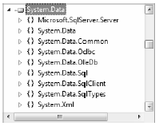

If you have a background in Microsoft’s previous COM-based data access model (Active Data Objects, or ADO), you need to understand that ADO.NET has little to do with ADO beyond the letters A, D, and O. While it is true that there is some relationship between the two systems (e.g., each has the concept of connection and command objects), some familiar ADO types (e.g., the Recordset) no longer exist. Furthermore, you can find many new ADO.NET types that have no direct equivalent under classic ADO (e.g., the data adapter).
Unlike classic ADO, which was primarily designed for tightly coupled client/server systems, ADO.NET was built with the disconnected world in mind, using DataSets. This type represents a local copy of any number of related data tables, each of which contains a collection of rows and column. Using the DataSet, the calling assembly (such as a web page or desktop executable) is able to manipulate and update a DataSet’s contents while disconnected from the data source and send any modified data back for processing using a related data adapter.
Perhaps the most fundamental difference between classic ADO and ADO.NET is that ADO.NET is a managed library of code; therefore, it plays by the same rules as any other managed library. The types that make up ADO.NET use the CLR memory management protocol, adhere to the same type system (e.g., classes, interfaces, enums, structures, and delegates), and can be accessed by any .NET language.
From a programmatic point of view, the bulk of ADO.NET is represented by a core assembly named System.Data.dll. Within this binary, you find a good number of namespaces (see Figure 21-1), many of which represent the types of a particular ADO.NET data provider (defined momentarily).
Figure 21-1 System.Data.dll is the core ADO.NET assembly
It turns out most Visual Studio 2010 project templates automatically reference this key data access assembly. However, you do need to update your code files to import the namespaces you wish to use, as in this example:
using System; // Bring in some ADO.NET namespaces! using System.Data; using System.Data.SqlClient; namespace MyApp { class Program { static void Main(string[] args) { } } }
You should also understand that there are other ADO.NET-centric assemblies beyond System.Data.dll (e.g., System.Data.OracleClient.dll and System.Data.Entity.dll) that you might need to reference manually in your current project using the Add Reference dialog box.
You can use the ADO.NET libraries in three conceptually unique manners: connected, disconnected, or through the Entity Framework. When you use the connected layer (the subject of this chapter), your code base explicitly connects to and disconnects from the underlying data store. When you use ADO.NET in this manner, you typically interact with the data store using connection objects, command objects, and data reader objects.
The disconnected layer (you will learn more about this in Chapter 22) allows you to manipulate a set of DataTable objects (contained within a DataSet) that functions as a client-side copy of the external data. When you obtain a DataSet using a related data adapter object, the connection is automatically opened and closed on your behalf. As you would guess, this approach helps free up connections for other callers quickly and goes a long way toward increasing the scalability of your systems.
Once a caller receives a DataSet, it is able to traverse and manipulate the contents without incurring the cost of network traffic. Also, if the caller wishes to submit the changes back to the data store, the data adapter (in conjunction with a set of SQL statements) is used to update the data source; at this point the connection is reopened for the database updates to occur, and then closed again immediately.
With the release of .NET 3.5 SP1, ADO.NET was enhanced to support a new API termed the Entity Framework (or simply, EF). Using EF, you will find that many of the low-level database specifics (such as complex SQL queries) are hidden from view and authored on your behalf when you generate a fitting LINQ query (e.g., LINQ to Entities). You will examine this aspect of ADO.NET in Chapter 23.